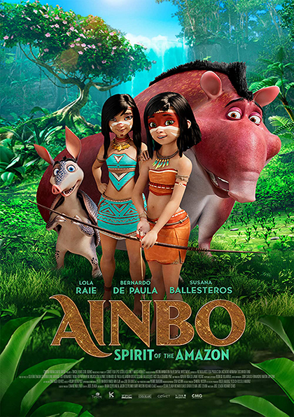
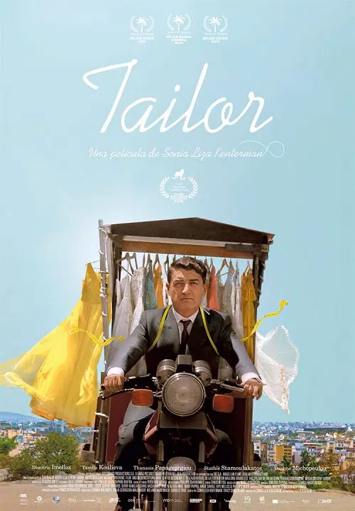

Los amores de Anaïs
Sinopsis:
Anaïs tiene 30 años y es inestable en lo económico y en el amor. Un día conoce a Daniel y este siente un profundo flechazo por ella. Pero Daniel vive con Emilie que rápidamente también se siente cautivada por Anaïs. Esta es la historia de una joven parisina inquieta y un tanto alocada con un profundo deseo de amar.

La mancha negra
Sinopsis:
Matilde Cisneros es una anciana que vive junto a sus tres hijas en un pequeño pueblo del interior de Andalucía a principios de los años 70. Tras la muerte de Matilde, sus hijas se disponen a preparar su velatorio, a pesar de que todo el pueblo les da la espalda. La herencia de Matilde, compuesta de propiedades y terrenos, y la llegada de un inesperado hermano mayor, convierte la codicia y el propio interés en el eje de la historia.

The medium
Sinopsis:
En una aldea rural en la región de Isan, en el noreste de Tailandia, sus habitantes creen que todas las cosas y todos los lugares poseen un espíritu: las casas, los bosques, las montañas, los árboles e incluso los campos de arroz. Un equipo documental se desplaza hasta allí para hacer un seguimiento de la historia de Nim, una chamán que ha creído ver extraños signos en su sobrina Mink que demostrarían que está a punto de ser poseída por la diosa Bayan y heredar su chamanismo como ha sucedido a lo largo de generaciones en su familia. Pero mientras tratan de capturar el misterioso fenómeno, el comportamiento de la joven se vuelve cada vez más extremo y Nim comienza a sospechar que lo que la posee no es la diosa que todos esperaban que fuera.

Ainbo
Sinopsis:
La pequeña Ainbo vive en lo más profundo de la selva amazónica. Tras perder a su madre y pelearse con los adultos de su aldea, esta joven arquera emprende un viaje para salvar a su pueblo del poder destructor del hombre blanco. En su viaje épico la acompañan sus guías espirituales: Dillo, un armadillo pequeño y divertido, y Vaca, un tapir de gran tamaño. Todos ellos se embarcan en una aventura para salvar su hogar, situado en ese espectacular entorno natural.

Cásate conmigo
Sinopsis:
La superestrella musical Kat Valdez (Jennifer Lopez) y el profesor de matemáticas Charlie Gilbert (Owen Wilson), dos perfectos desconocidos deciden, primero, casarse y luego, poco a poco, conocerse. En un mundo dominado por los clics, las visitas y el número de seguidores, este insospechado romance entre dos personas radicalmente distintas en busca de emociones reales contrasta el amor sobre la fama, el matrimonio y las redes sociales. La película está dirigida por Kat Coiro a partir de un guion de John Rogers, Tami Sagher y Harper Dill basado en la novela gráfica de Bobby Crosby.

Tailor (El sastre)
Sinopsis:
Nikos vive en el ático de la sastrería familiar. Cuando el banco amenaza con embargar la sastrería y su padre cae enfermo, Nikos entra en acción: con una maravillosa, aunque extraña sastrería sobre ruedas, consigue reinventarse a sí mismo aportando estilo y confianza a las mujeres de Atenas con preciosos vestidos.